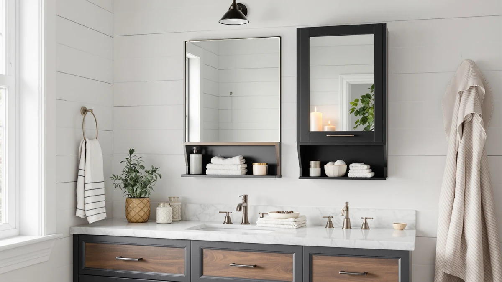

Hasuit Medicine Cabinet Organizer Review (2026): Worth It?
Prices and picks verified as of November 2026. Independent, reader-supported reviews.


Quick Answer
The Hasuit Medicine Cabinet Organizer earns its price with a rotating three-way mirror, adjustable LED lighting and a built-in charging station, features most lighted medicine cabinets in this price range skip. At $139.57 it costs more than a basic mirror cabinet, but the outlets and lighting replace a separate vanity light and plug strip. If you want simple drawer or floor storage instead, the CLEEMAN, HMstone and Akxomel cabinets below cost less and skip the mirror entirely.
Our pick: Hasuit Medicine Cabinet Organizer with, $139.57 Check Price on Amazon
Bottom line: our top pick is the Hasuit Medicine Cabinet Organizer with Mirror at $139.57.
Things to Know Before You Buy
- This Hasuit medicine cabinet organizer mounts on the wall and needs a stud or anchors rated for about 25 pounds loaded, unlike the freestanding cabinets we compare it against.
- The built-in charging station (two AC outlets, two USB ports) needs a wall outlet near the mirror, so check your bathroom's outlet placement before you install it.
- If you want floor or over-the-toilet storage instead of a mirror cabinet, the CLEEMAN, HMstone and Akxomel picks below skip the mirror and cost less.
- All four cabinets are sold through third-party Amazon listings, so confirm current pricing before you buy, since prices on cabinets like these shift within weeks.
This Hasuit medicine cabinet organizer review looks at what $139.57 buys you: a three-way rotating mirror, adjustable LED lighting and a charging station built into a 31.5 by 23.6 inch wall cabinet. Most lighted medicine cabinets in this price bracket give you a mirror and maybe one light setting. The Hasuit adds outlets, three light colors with a memory function and a mirror that rotates up to 360 degrees, features that usually show up on cabinets costing $80 to $100 more.
We compared its specs, current Amazon pricing and the manufacturer's stated features against three other bathroom storage cabinets in the same price range: the CLEEMAN floor cabinet, the HMstone over-the-toilet cabinet and the Akxomel tall storage cabinet. None of the four has a published star rating or review count on Amazon right now, so this comparison leans on what the spec sheets and listed features actually promise rather than a review average. If your bathroom needs more drawer or shelf space instead of a mirror, skip ahead to the alternatives section below.
Why You Should Trust Us
Ilane Tall researches bathroom storage and fixtures for Best Bathroom Storage, comparing spec sheets, current Amazon prices and listed features across dozens of cabinets, shelves and organizers each month. We do not run a physical testing lab, and we do not buy, install or live with the products we cover. Every claim in this Hasuit medicine cabinet organizer review comes from the manufacturer's published specs and the current Amazon listing, not from hands-on use.
Our Research Experience
We did not install this Hasuit medicine cabinet organizer or try its mirror and lighting by hand. Instead, we compared its listed specs against the three other cabinets in this review: dimensions, included features, materials and current price. For the mirror and lighting claims, we relied on the manufacturer's stated specifications, since a wall-mounted electrical fixture like this is not something we can safely wire and check ourselves. For the charging station, we checked the listed outlet and USB port count against what similar lighted cabinets typically include at this price. Where owner feedback exists on an Amazon listing, we read it for recurring patterns rather than isolated complaints, and we flag below where that feedback is thin or absent.
Overview & Specs

Hasuit Medicine Cabinet Organizer with
What we like
- Three-way rotating mirror gives a 270 to 360 degree view for tasks like shaving or styling, according to the listing
- Built-in charging station with two AC outlets and two USB ports means one less plug strip on the counter
- Three LED color modes with a memory function save your last setting instead of resetting each time
- Adjustable shelves inside let you reconfigure storage as your bottles and bins change
Flaws but not dealbreakers
- At $139.57, it costs $10 to $20 more than the floor and over-the-toilet cabinets in this comparison, and you still need a nearby outlet to use the charging station
- Wall mounting means anchoring into studs or drywall anchors, a more involved install than setting a freestanding cabinet in place
- Amazon does not list a star rating or review count yet, so there is no owner feedback pattern to check against the manufacturer's claims
| Material | Metal / wood |
| Size | 31.5'' x 23.6'' |
The Hasuit Medicine Cabinet Organizer is a 31.5 by 23.6 inch wall-mounted cabinet with three doors, each with a mirror face that rotates independently. According to the listing, rotating the side doors lets you reach a 270 to 360 degree panoramic view, which matters for tasks like trimming a beard or checking the back of a haircut where a flat mirror leaves blind spots. Inside, the cabinet uses adjustable shelves, so you can reconfigure the space for taller bottles or shorter skincare jars without being locked into fixed shelf heights. Hasuit lists the body as a metal and wood construction with a white finish, which matches the finish on most of the budget cabinets in this comparison.
The electrical package built into this Hasuit medicine cabinet organizer is what separates it from a standard lighted mirror cabinet. The listing specifies two AC outlets and two USB ports that Hasuit rates as waterproof, positioned for charging an electric toothbrush, razor or hair dryer without running a cord across the counter. The LED lighting includes three color modes and a memory function, so the cabinet keeps your last brightness and color setting instead of resetting to a default every time you flip the switch. Both features require the cabinet to sit near an existing outlet, since this is a plug-in fixture rather than a hardwired one, which is worth checking in your own bathroom layout before you buy.
What We Liked
The biggest strength here is how much this Hasuit medicine cabinet organizer replaces. A rotating mirror, adjustable lighting and a charging station are normally three separate purchases: a mirror cabinet, a vanity light bar and a plug-in charging dock. Combining them into one $139.57 fixture is the clearest reason to pick it over a plain mirror cabinet at a similar price.
The memory function on the LED lighting is a small detail that matters in daily use. Cabinets that reset their brightness or color temperature every time you turn them off force you to readjust each morning, and a memory function that works as described removes that friction.
The adjustable shelving also gives it an edge over simpler medicine cabinets that ship with fixed glass shelves sized for a narrow range of bottle heights. Moving shelves up or down lets the storage adapt to what you actually own, rather than the other way around.
What Could Be Better
Price is the first tradeoff. At $139.57, the Hasuit cabinet costs more than every other cabinet in this four-way comparison, and a chunk of that premium goes toward electrical components that add value only if you actually use the charging ports and lighting regularly.
Installation is the second consideration. Because this is a wall-mounted cabinet with an electrical connection, mounting it correctly means locating studs or using rated anchors and having a nearby outlet, a more involved process than placing a freestanding cabinet like the Akxomel or CLEEMAN against a wall.
We also could not find a published star rating or review count for this listing at the time of writing, so there is no pattern of verified owner feedback to weigh against the manufacturer's specs. That is not a flaw in the product itself, but it does mean this Hasuit medicine cabinet organizer review relies more heavily on listed specifications than on accumulated owner experience.
Who Is It For?
This Hasuit medicine cabinet organizer fits a bathroom that already has an outlet within reach of the mirror and a household that actually wants lighting control and charging built in, rather than treated as a bonus. If you shave, do makeup or style hair in front of the mirror regularly, the rotating three-way design and adjustable LED modes address a real daily annoyance: flat lighting and a single fixed angle.
It is a weaker fit if your priority is maximizing storage volume rather than mirror functionality. The CLEEMAN, HMstone and Akxomel cabinets compared below all offer more enclosed storage space for less money, without a mirror or lighting. It is also not the right pick if running a new outlet or anchoring into your specific wall is impractical, since the cabinet depends on both.
Alternatives to Consider
If a mirror and charging station are not what your bathroom needs instead of this Hasuit medicine cabinet organizer, these three cabinets trade that electrical package for more straightforward storage at a lower price.

Also Great
CLEEMAN Bathroom Floor Cabinet with
Trades the mirror for four drawers, a double-door cabinet and a 3-position adjustable shelf in a 31.5 by 32 inch freestanding footprint. Two anti-toppling devices and magnetic door catches address the stability concerns of a taller freestanding piece. See more freestanding options in our bathroom storage cabinets roundup.
$134.99
Check Price on Amazon
Also Great
HMstone Over The Toilet Storage
Uses the otherwise wasted space above your toilet, with an arched frame, rattan-style doors and height-adjustable shelves inside a 23.7 by 70 inch frame. An anti-tip device and moisture-resistant MDF construction target the humidity that over-the-toilet storage has to deal with. Read our full HMstone over-the-toilet review for more detail.
$129.99
Check Price on Amazon
Best Value
Akxomel 53.1" H Tall Bathroom
Splits six doors between an upper transparent set for frequently used items and lower solid doors for bulk storage, inside a narrow 22.8 by 11.8 by 53.1 inch footprint that fits a tight bathroom corner. It is also the least expensive cabinet in this comparison. Read our full Akxomel tall cabinet review for more detail.
$119.99
Check Price on AmazonIs the Hasuit Medicine Cabinet Organizer worth the extra cost over a plain mirror cabinet?
If you will actually use the charging ports and the adjustable LED lighting, yes.
Does the Hasuit cabinet need a dedicated electrical outlet?
It needs an existing wall outlet nearby, not a dedicated or hardwired circuit.
Frequently Asked Questions
Is the Hasuit Medicine Cabinet Organizer worth the extra cost over a plain mirror cabinet?
If you will actually use the charging ports and the adjustable LED lighting, yes. Those features typically cost extra when bought separately as a light bar and a plug-in charger, so folding them into one $139.57 fixture in this Hasuit medicine cabinet organizer review comes out close to a wash on price, with less counter clutter. If you only want a mirror, the CLEEMAN or Akxomel alternatives cost less.
Does the Hasuit cabinet need a dedicated electrical outlet?
It needs an existing wall outlet nearby, not a dedicated or hardwired circuit. The cabinet plugs in like any other bathroom fixture, and the built-in AC outlets and USB ports draw from that same connection, so confirm your outlet sits within reach of the mounting location before you buy.
How does the Hasuit compare to the CLEEMAN, HMstone and Akxomel cabinets?
The Hasuit is the only one of the four with a mirror, lighting or charging ports. The CLEEMAN, HMstone and Akxomel are enclosed storage cabinets with drawers or shelves, priced at $134.99, $129.99 and $119.99, all less than the Hasuit's $139.57. Pick the Hasuit for mirror functionality, and pick one of the other three for more enclosed storage per dollar.
Final Verdict
This Hasuit medicine cabinet organizer review comes down to one question: does your bathroom need a mirror, or does it need storage? Hasuit's $139.57 cabinet earns its price by bundling the mirror, lighting and charging station into one purchase instead of three. That's the right call if you use a bathroom mirror for grooming tasks and have an outlet nearby. If you want more enclosed storage per dollar instead, the CLEEMAN, HMstone or Akxomel cabinets covered above cost less and skip the mirror. For most people replacing a plain medicine cabinet, Hasuit is the pick worth the premium.